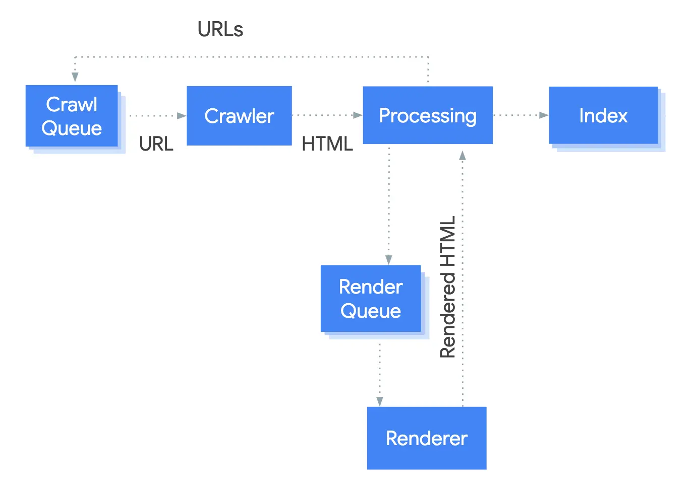

Short answer
A rendering crawler fetches a URL, renders it, and extracts links from the rendered result.
The diagram shows that loop: queue, fetch, process, render, links back to the queue. It describes a capable crawler, not every crawler, and not a guarantee that rendering will happen soon or at all for your URL. SEO Health still prefers the important text and links in the first HTML so discovery does not depend on the render queue.
Definition
The figure is a public explanation of one system’s pipeline. It is not a schedule and not a measurement of how often any site is rendered. Copying the picture into a report does not prove your shell was rendered. Compare raw HTML and rendered HTML on a sample commercial URL instead.
How a crawl meets this rule
Put primary links in the first HTML, and sample raw versus rendered HTML before you rely on the render queue.
Links that appear only after a click in the rendered page may never enter the queue. A crawler that does render still has a finite amount of rendering. Templates that require a long client interaction before they show products are a health defect even if some rendering exists in the world.

What to check
- Product links present in raw HTML
- Raw versus rendered comparison on one commercial URL
- Links that require a click before they exist
- No assumption that every crawler runs the pictured pipeline
- A re-audit of view-source after the template change
A practical example
A category grid’s links are created after a client filter runs. The raw HTML has no product anchors. The diagram’s render step might eventually see them, and it might not be soon. The repair writes the product anchors into the HTML. The filter can still run for people.
What this does not claim
A rendering pipeline does not guarantee rankings, indexation, or citations.
Where Mika Visibility files this
Mika Visibility groups crawlability with SEO Health: robots rules, status codes, and paths a crawler can follow. Broken paths and blocked templates are health findings. Missing topics are not. GEO still depends on pages a crawler can actually reach, but reachability does not write the answer for the buyer.
The flow diagram is a pipeline explanation, not evidence that a particular URL was rendered.
FAQ
What does the render step add?
A rendering crawler fetches a URL, renders it, and extracts links from the rendered result.
Where should primary links live?
Put primary links in the first HTML, and sample raw versus rendered HTML before you rely on the render queue.
Does the pipeline guarantee indexation?
A rendering pipeline does not guarantee rankings, indexation, or citations.
Next step
Run a structured SEO + GEO audit to see health findings, growth gaps, and a blueprint you can act on.
Clearer entities, answers, evidence, and context make pages easier to understand and reference. Results in any answer product are not guaranteed.